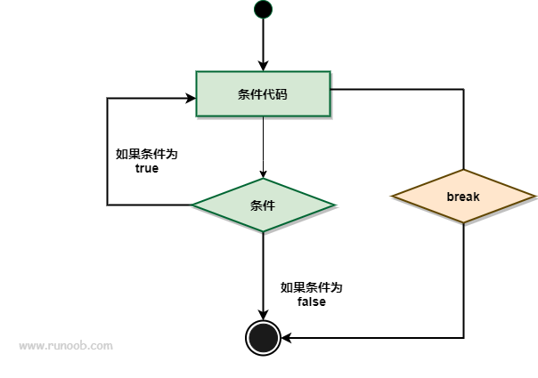

Go言語 break 文
Go言語では、break 文は現在のループまたは switch 文の実行を終了し、そのループまたは switch 文のコードブロックから抜け出すために使用されます。
break 文は以下の用途に使用できます：
- ループ文内でループから抜け出し、ループの後の文の実行を開始するために使用されます。
- break は switch 文で1つの case を実行した後に文から抜け出す役割を果たします。
- break は select 文にも適用できます。
- 多重ループでは、ラベル label を使用して break したいループを指定できます。
構文
break の構文形式は次のとおりです：
break
break 文のフローチャートは次のとおりです：

実例
for ループで break を使用する：
実例
import "fmt"
func main() {
for i := 0; i < 10; i++ {
if i == 5 {
break // i が 5 のときにループから抜け出す
}
fmt.Println(i)
}
}
出力結果：
0 1 2 3 4
変数 a が 15 より大きいときにループから抜け出す：
実例
import "fmt"
func main() {
/* ローカル変数の定義 */
var a int = 10
/* for ループ */
for a < 20 {
fmt.Printf("a の値 : %d\n", a);
a++
if a > 15 {
/* a が 15 より大きい場合に break 文を使用してループから抜け出す */
break
}
}
}
上記の実例では、a の値が 15 より大きいときに break 文が実行され、ループ全体が終了します。実行結果は次のとおりです：
a 的值为 : 10 a 的值为 : 11 a 的值为 : 12 a 的值为 : 13 a 的值为 : 14 a 的值为 : 15
以下の実例には多重ループがあり、ラベルを使用する場合と使用しない場合の違いを示しています：
実例
import "fmt"
func main() {
// ラベルを使用しない
fmt.Println("---- break ----")
for i := 1; i <= 3; i++ {
fmt.Printf("i: %d\n", i)
for i2 := 11; i2 <= 13; i2++ {
fmt.Printf("i2: %d\n", i2)
break
}
}
// ラベルを使用する
fmt.Println("---- break label ----")
re:
for i := 1; i <= 3; i++ {
fmt.Printf("i: %d\n", i)
for i2 := 11; i2 <= 13; i2++ {
fmt.Printf("i2: %d\n", i2)
break re
}
}
}
上記の実例の実行結果は次のとおりです：
---- break ---- i: 1 i2: 11 i: 2 i2: 11 i: 3 i2: 11 ---- break label ---- i: 1 i2: 11
switch 文で break を使用する：
実例
func main() {
day := "Tuesday"
switch day {
case "Monday":
fmt.Println("It's Monday.")
case "Tuesday":
fmt.Println("It's Tuesday.")
break // switch 文から抜け出す
case "Wednesday":
fmt.Println("It's Wednesday.")
}
}
出力結果：
It's Tuesday.
select 文で break を使用する：
実例
import (
"fmt"
"time"
)
func main() {
ch1 := make(chan int)
ch2 := make(chan int)
go func() {
time.Sleep(2 * time.Second)
ch1 <- 1
}()
go func() {
time.Sleep(1 * time.Second)
ch2 <- 2
}()
select {
case <-ch1:
fmt.Println("Received from ch1.")
case <-ch2:
fmt.Println("Received from ch2.")
break // select 文から抜け出す
}
}
出力結果：
Received from ch2.
Go言語では、break 文の select 文への適用は比較的特殊です。select 文の特性により、break 文は select 文自体から抜け出すために直接使用することはできません。select 文は非ブロッキングであり、すべての通信操作の準備が整うまで待機し続けるためです。select 文の実行を早期に終了する必要がある場合は、return 文または goto 文を使用して同じ効果を得ることができます。
以下の実例は、select 文で return を使用して実行を早期に終了する場合を示しています：
実例
import (
"fmt"
"time"
)
func process(ch chan int) {
for {
select {
case val := <-ch:
fmt.Println("Received value:", val)
// 何らかのロジックを実行
if val == 5 {
return // select 文の実行を早期に終了
}
default:
fmt.Println("No value received yet.")
time.Sleep(500 * time.Millisecond)
}
}
}
func main() {
ch := make(chan int)
go process(ch)
time.Sleep(2 * time.Second)
ch <- 1
time.Sleep(1 * time.Second)
ch <- 3
time.Sleep(1 * time.Second)
ch <- 5
time.Sleep(1 * time.Second)
ch <- 7
time.Sleep(2 * time.Second)
}
上記の実例では、process 関数は無限ループ内で select 文を使用してチャネル ch 上のデータを待機します。データを受信すると、何らかのロジックを実行します。受信した値が 5 に等しい場合、return を使用して select 文の実行を早期に終了します。
出力結果：
No value received yet. No value received yet. Received value: 1 No value received yet. Received value: 3 No value received yet. Received value: 5
{'translated_text': '{'translated_text': '{'translated_text': 'return を使用することで、select 文内で実行を早期に終了し、呼び出し元のコードに戻ることができます。'}'}'}
注意すべき点は、return 文を使用すると現在の関数の実行が即座に終了するため、実際の要件に応じて select 文内でどの方法を使用して実行を早期に終了するかを決定してください。
その他の拡張